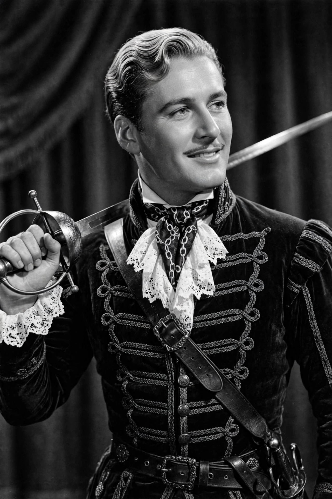

Errol Leslie Thomson Flynn (20 June 1909 - 14 October 1959) was an Australian-American actor who achieved fame during the Golden Age of Hollywood. He is best remembered for his swashbuckling roles in Warner Bros. adventure films, most famously Robin Hood in The Adventures of Robin Hood (1938), and for a flamboyant, hedonistic private life that gave rise to the phrase "in like Flynn".

Flynn in his signature swashbuckler role.
| Errol Flynn | |
| Born | 20 June 1909, Hobart, Tasmania, Australia |
|---|---|
| Died | 14 October 1959 (aged 50), Vancouver, Canada |
| Occupation | Actor |
| Years active | 1932-1959 |
| Spouses | Lili Damita, Nora Eddington, Patrice Wymore |
| Children | 4, including Sean Flynn |
Flynn was born in Hobart, Tasmania, the son of marine biologist Theodore Thomson Flynn. Expelled from schools in Australia and England, he worked variously as a shipping clerk, a policeman and a gold prospector in New Guinea before drifting into acting, first in the Australian film In the Wake of the Bounty (1933), then in British films.
Signed by Warner Bros., Flynn's breakthrough came with Captain Blood (1935), directed by Michael Curtiz, with whom he made twelve films. The Charge of the Light Brigade (1936), The Adventures of Robin Hood (1938) - shot in Technicolor and now regarded as a classic - Dodge City (1939) and The Sea Hawk (1940) cemented his image as the dashing romantic hero. His on-screen pairing with Olivia de Havilland in eight films was one of the era's most popular.
In 1942 Flynn was charged with statutory rape of two underage girls; he was acquitted, but the trial fed his roguish public image. Rejected for military service because of health problems including malaria and a heart condition, he continued in films such as Gentleman Jim (1942) and Objective, Burma! (1945). Heavy drinking eroded his career in the 1950s, though he won late praise for The Sun Also Rises (1957) and Too Much, Too Soon (1958). He died of a heart attack in Vancouver aged 50.
Flynn's son Sean Flynn became a photojournalist who disappeared in Cambodia in 1970. Errol Flynn remains the archetypal screen swashbuckler, and his memoir My Wicked, Wicked Ways was published posthumously in 1959.